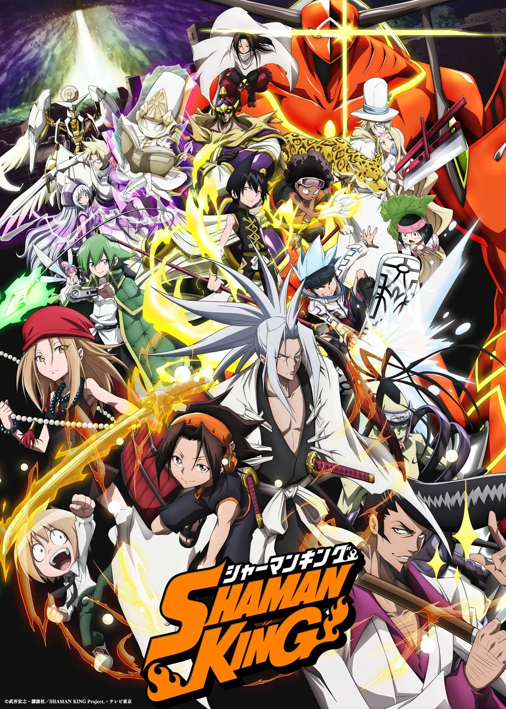

Remake
First series (2001)

The episodes of the Shaman King anime series are directed by Seiji Mizushima and co-produced by TV Tokyo, NAS, and Xebec. At an early stage of anime production, Takei himself helped the anime's staff. However, he soon left the staff due to his time limitations as he was working on the manga. In September 2020, Mizushima commented that the original anime material presented in the latter half of the show was not something he did on his own accord, and it was requested from Shaman King's original publisher Shueisha. The 64 episodes were aired between July 4, 2001 and September 25, 2002 on TV Tokyo in Japan. The episodes were collected into 16 DVD compilations by King Records in Japan and released between October 30, 2001 and January 22, 2003. The DVDs were later collected and released in three box sets between August 27, 2008 and December 25, 2008. In June 2020, it was announced that the series would be streamed on Full Anime TV and Bonbon TV services in Japan. 4Kids Entertainment obtained the rights to broadcast the Shaman King anime in the United States, where it premiered on FoxBox on September 6, 2003. Five DVD compilations of the English adaptation have been released by Funimation between October 19, 2004 and March 29, 2005 in an uncut form. In June 2021, Discotek Media announced they re-licensed the series.
Second series (2021)
At Otakon 2015, former Madhouse president and then MAPPA president, Masao Maruyama, expressed his desire to work on a reboot of Shaman King. In February 2017, while answering a fan's question, Takei revealed on his official Twitter that he received an offer for an anime reboot of Shaman King, but he turned the offer down because he was told that the new anime would not be able to use the first anime's voice actors and soundtrack music, although Takei hoped for another chance in the future. In June 2020, a new anime television series was announced that would adapt the 35 volumes of the new complete manga edition. The anime is produced by Bridge and directed by Joji Furuta, with series composition by Shōji Yonemura, character designs by Satohiko Sano and music composed by Yuki Hayashi. It aired from April 1, 2021 to April 21, 2022, on TV Tokyo. The series consists of 52 episodes from four Blu-ray Disc boxes, each with 13 episodes: with the first two scheduled for a release on August 25 and November 24, 2021 respectively, and the last two set for release on February 23 and May 25, 2022. Netflix acquired the streaming rights to the series for an English dub, and it premiered on August 9, 2021 on the streaming platform. At the end of the reboot's finale, it was announced that a sequel has been green-lit.